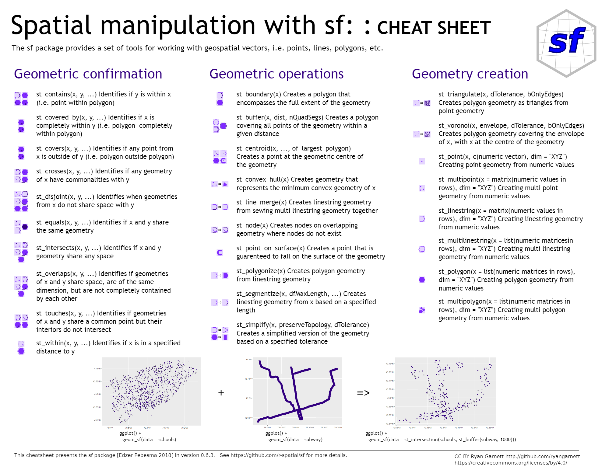

aff_hsg <- read_csv("https://data.cityofnewyork.us/resource/hg8x-zxpr.csv?$limit=10000")17. Spatial Features
Video Tutorial
The Spatial features package allows us to read in spatial data into R and transform it. Let’s get a spatial dataset on affordable housing from the NYC open data portal.
With SF, I can take tabular data and make it into a spatial dataset. In this case I have coordinates that I turn into points us st_as_sf
library(sf)
aff_hsg_sf <- aff_hsg %>%
clean_names() %>%
filter(!is.na(longitude)) %>% #remove properties with missing coordinates
st_as_sf(coords = c("longitude", "latitude"), crs = 2263) #be careful! x = longitude, y = latitudeNow that this is spatial, I can map it! geom_sf is the ggplot function that maps spatial objects. It works much like any other ggplot.
ggplot()+
geom_sf(aff_hsg_sf, mapping = aes())I can use programming for styling, too.
ggplot()+
geom_sf(aff_hsg_sf,
mapping = aes(size = all_counted_units,
color = all_counted_units),
alpha = 0.25)But that doesn’t look very good, let’s add some other layers. I can read in CDs directly as a shapefile using the geojson version from the Open data portal. This map is a long way from done, but now it has a semblance of a basemap.
cd_sf <- read_sf("https://data.cityofnewyork.us/resource/5crt-au7u.geojson") %>%
st_set_crs(st_crs(aff_hsg_sf)) # here I am setting the crs of the new data to the crs of the point data I already have
ggplot()+
geom_sf(cd_sf,
mapping = aes())+ #this layer will be on bottom!
geom_sf(aff_hsg_sf,
mapping = aes(size = all_counted_units,
color = all_counted_units),
alpha = 0.25) #this layer will be on top!
#alpha changes the opacity of the dotsI can also summarize data like I would in a tabular dataset
aff_hsg_sum <- aff_hsg %>%
group_by(community_board) %>%
summarize(total_affordable_units = sum(all_counted_units, na.rm = T))And then I could create a choropleth with the summarized data, now that I have the nta shapes (just a simple join!)
cd_aff_sum <- cd_sf %>%
mutate(community_board = case_when(
str_sub(boro_cd, 1, 1) == "1" ~ paste0("MN-",str_sub(boro_cd, 2,3)),
str_sub(boro_cd, 1, 1) == "2" ~ paste0("BX-",str_sub(boro_cd, 2,3)),
str_sub(boro_cd, 1, 1) == "3" ~ paste0("BK-",str_sub(boro_cd, 2,3)),
str_sub(boro_cd, 1, 1) == "4" ~ paste0("QN-",str_sub(boro_cd, 2,3)),
str_sub(boro_cd, 1, 1) == "5" ~ paste0("SI-",str_sub(boro_cd, 2,3)),
)) %>% #take the first character of boro_cd, replace it with the boro abbreviation, add the community board number
left_join(aff_hsg_sum, by = "community_board")I can map that, now as a choropleth
ggplot()+
geom_sf(cd_aff_sum,
mapping = aes(fill = total_affordable_units))I could also match it to other data, and write it out to a shapefile to use in GIS
library(tidycensus)
census_stats <- get_acs(
geography = "tract",
variables = c(population = "B01003_001",
med_income = "B07011_001"),
year = 2021,
state = "NY",
county = c("Bronx", "New York", "Kings", "Queens", "Richmond"),
output = "wide"
) %>%
clean_names()I need a crosswalk to go from census tracts to community districts. Open data has one!
cdtas_tracts <- read_csv("https://data.cityofnewyork.us/resource/hm78-6dwm.csv?$limit=10000",
col_types = cols(geoid = col_character()))
cdta_stats <- census_stats %>%
left_join(cdtas_tracts, by = "geoid") %>%
group_by(cdtacode, cdtaname) %>%
summarize(total_pop = sum(population_e, na.rm = T),
avg_med_inc = mean(med_income_e, na.rm = T)) %>%
mutate()Now I can join! With everything in the same data frame I can write it out to read into spatial software, or I can visualize it
cd_aff_stats <- cd_aff_sum %>%
mutate(cdtacode = str_replace(community_board, "-", "")) %>%
left_join(cdta_stats) %>%
mutate(aff_units_person = total_affordable_units/total_pop)st_write(cd_aff_stats,
"output/cd_aff_hsg.shp",
append = F)I can map affordable units per person (normalized!)
ggplot()+
geom_sf(cd_aff_stats,
mapping = aes(fill = aff_units_person))What if I wanted to map both both the # of units per cd and the median income?
I can use one of sf’s spatial operators and to take a centroid and map points
points_aff_cd <- cd_aff_stats %>%
select(total_affordable_units, cdtacode) %>%
st_centroid()And overlay on a choropleth. You notice that a lot of the buildings are built in low income areas!
ggplot()+
geom_sf(cd_aff_stats,
mapping = aes(fill = avg_med_inc))+
geom_sf(points_aff_cd,
mapping = aes(size = total_affordable_units),
color = "pink",
alpha = 0.5)I could write out this ggplot to edit in vector graphics
ggsave("output/aff_hsg_inc_nyc.svg")What if I didn’t have a crosswalk and needed to match points to the community district? I can do a spatial join to find what cd all the points fall into.
points_polygons_join <- st_intersection(aff_hsg_sf, cd_sf)I can then use summarize() to count points in polygons - or do more advanced summaries
points_polygons_join %>%
as.data.frame() %>% #summarize works faster without the spatial features attached
group_by(boro_cd) %>%
summarize(points_in_polygon = n(),
units_per_cd = sum(all_counted_units, na.rm = T))What if I wanted to find the proportion of affordable housing in the flood zone? I can do this with an intersects and mutate - I don’t even need to join the two datasets!
# floodplain_2020s_100y <- read_sf("https://data.cityofnewyork.us/resource/inra-wqx3.geojson?$limit=10000") %>%
# st_make_valid() %>% #this magic function repairs any invalid geometries
# st_union() %>% #here I make the entire floodplain into one big shape
# st_set_crs(st_crs(points_polygons_join)) #and set it to the same crs as my points
#
# points_polygons_join %>%
# mutate(fplain_2020s_100y = lengths(st_intersects(.,floodplain_2020s_100y))) %>% #st_intersects returns a list of the shapes it intersects with - if its 0 it didn't intersect, if its 1 it did!
# as.data.frame() %>%
# group_by(fplain_2020s_100y) %>%
# summarize(count = n(),
# units = sum(all_counted_units, na.rm = T))Many more spatial operations available on the cheat sheets
